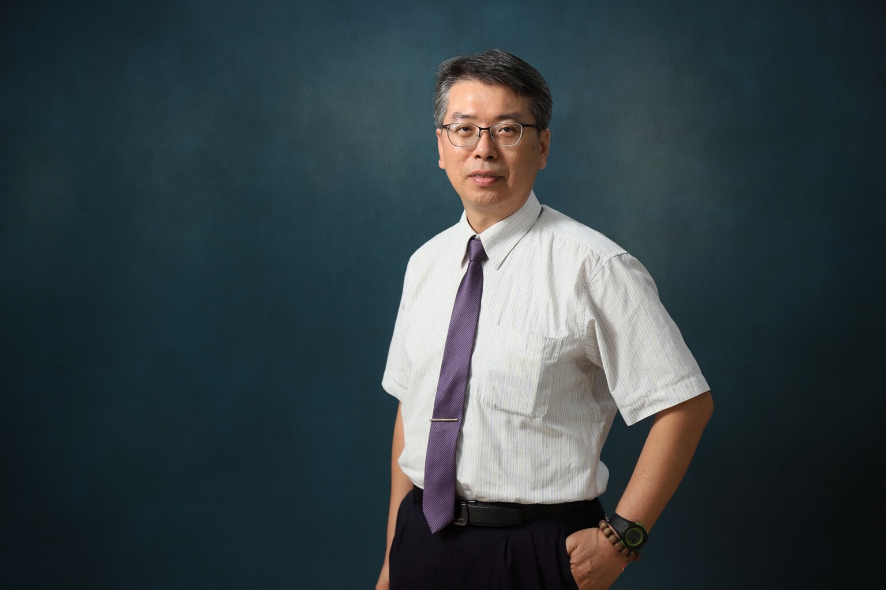
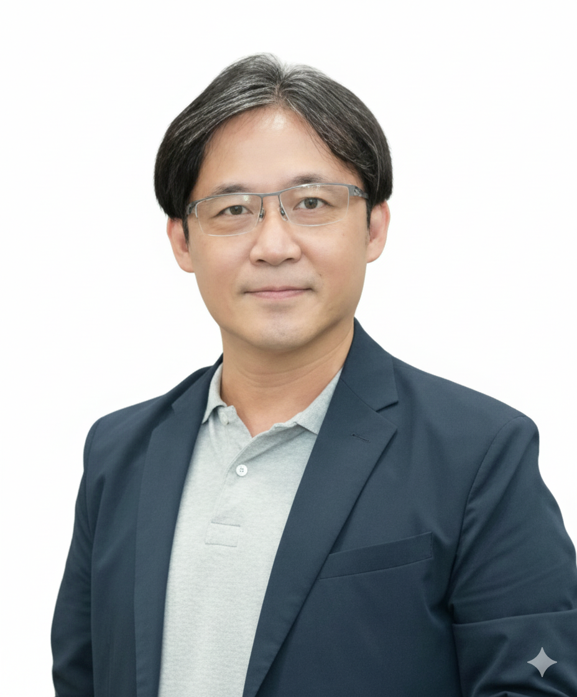
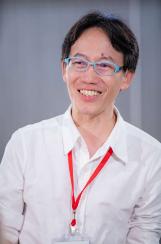
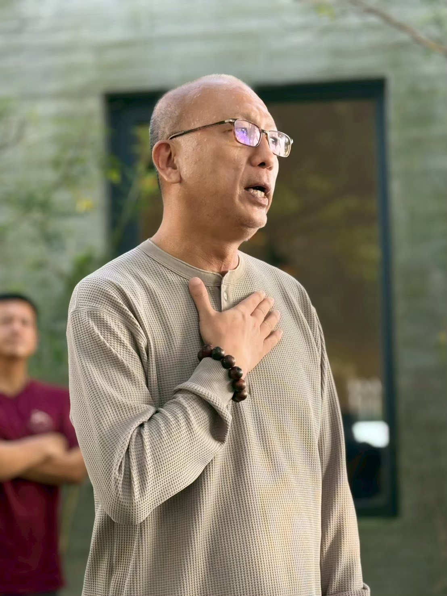

Tinghao Campus 2026
本屆「挺好 Campus」活動匯聚了五所大學師生，共同針對 ESG 環境保護、社會責任與企業永續治理（CSR）進行專案黑客松發表。全天包含上午教師學術交流與下午 17 組學生期末成果決賽發表。
主要場地：國立臺南大學 府城校區 啟明苑演藝廳
會場地址：台南市中西區樹林街二段33號
至「台南站」下車，由 2 號出口轉乘高鐵快捷公車「H31 往台南市政府線」，於「延平郡王祠站」下車，步行約 5-8 分鐘即可由樹林街大門進入校區。
至「台南火車站」下車，建議於火車站前站搭乘計程車直達本校，車程約 5-10 分鐘。
行駛國道一號於仁德交流道下（往台南市區方向），沿東門路行駛接樹林街。因校內活動車位較飽和，建議優先將車輛停放於周邊公有的「體育公園停車場」或「大南門城路邊停車格」，步行至演藝廳僅需 3 分鐘。
台南市中西區樹林街二段33號
※ 本活動包含上下午完整流程，中午敬邀各位評委出席專屬午宴。
| 時間區段 | 議程項目 | 地點位置 |
|---|---|---|
| 08:00 - 09:00 | 工作人員報到、場地部署與設備總測試 | 啟明苑演藝廳 |
| 09:30 - 10:00 | 師長與貴賓報到入場 (上午場) | 啟明苑演藝廳 |
| 10:00 - 10:15 | 交流會正式開場 ＆ 上午場師長大合照 | 啟明苑演藝廳 |
| 10:15 - 11:10 | 五校教師永續實務發表分享 | 啟明苑演藝廳 |
| 11:10 - 12:00 | 永續校園與教學模式綜合對談交流 | 啟明苑演藝廳 |
| 12:00 - 13:00 | 🍴 跨校師長與評審交流午宴 (現場備有餐盒) | B309 教室 |
| 13:15 - 13:40 | 下午發表大賽正式開幕 創辦人致詞(10m) / 評審團介紹(5m) / 下午大合照(5m) |
啟明苑演藝廳 |
| 13:40 - 15:22 | 17組跨校學生團隊 成果提案發表大賽 每組嚴格限制 5 分鐘發表 ＋ 1 分鐘換場 |
啟明苑演藝廳 |
| 15:22 - 16:00 | 🏆 評審團專業講評 (每人3分鐘) ＆ 大會頒獎典禮 | 啟明苑演藝廳 |
| 登台時間 | 學校單位 | 團隊與專案名稱 | 評選獎項領域 |
|---|---|---|---|
| 13:40 - 13:46 | 淡江大學 | 「食」現夢想家 | 永續模式獎 組 |
| 13:46 - 13:52 | 國立臺南大學 | 用愛翻轉未來 | 永續模式獎 組 |
| 13:52 - 13:58 | 國立臺南大學 | 微光種子 | 永續模式獎 組 |
| 13:58 - 14:04 | 嘉義大學 | 行動支Food | 永續模式獎 組 |
| 14:04 - 14:10 | 嘉義大學 | 集食點光 | 公益實踐獎 組 |
| 14:10 - 14:16 | 國立臺南大學 | 食在有愛 | 公益實踐獎 組 |
| 14:16 - 14:22 | 淡江大學 | 滬食行動 | 公益實踐獎 組 |
| 14:22 - 14:28 | 靜宜大學 | 糕興遇見你 | 公益實踐獎 組 |
| 14:28 - 14:34 | 嘉義大學 | 湯心比心｜NGO集食計畫 | 公益實踐獎 組 |
| 14:34 - 14:40 | 國立中山大學 | 第二組 | 公益實踐獎 組 |
| 14:40 - 14:46 | 國立中山大學 | 資產支配者 | 公益實踐獎 組 |
| 14:46 - 14:52 | 嘉義大學 | 豆米愛心實驗室 | 創意突破獎 組 |
| 14:52 - 14:58 | 嘉義大學 | i不釋手 | 創意突破獎 組 |
| 14:58 - 15:04 | 國立臺南大學 | 集食救援 | 創意突破獎 組 |
| 15:04 - 15:10 | 靜宜大學 | 母愛送糕家 | 創意突破獎 組 |
| 15:10 - 15:16 | 國立臺南大學 | 小事大愛 | 創意突破獎 組 |
| 15:16 - 15:22 | 嘉義大學 | 餐餐童樂 HealMeal | 創意突破獎 組 |
15:22 發表大賽結束後，將進入評審回饋時間。煩請各位委員針對負責的專業永續獎項，進行 **約 3 分鐘的重點講評**，並於講評結束後**親自頒發**該主責獎項。



